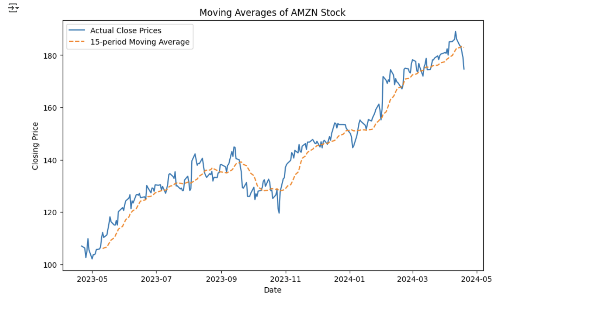
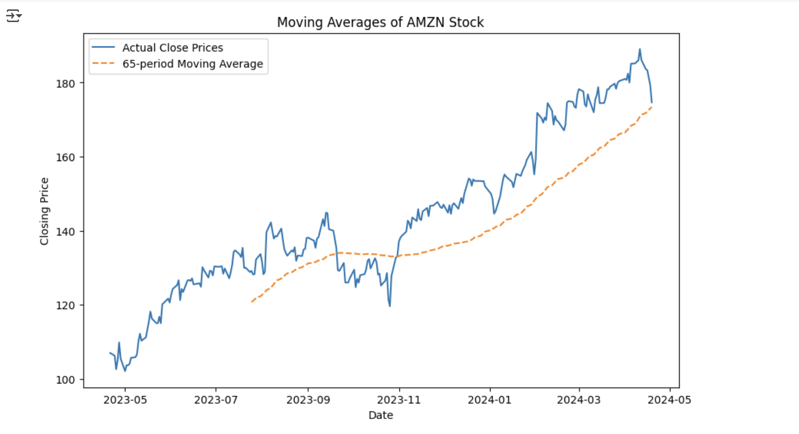

Introduction
This project explores Amazon stock performance using time series analysis and evaluates the impact of marketing expenditures on sales through regression models.
Key Steps and Findings
Data Collection
Historical Amazon stock data was analyzed, including Open, High, Low, Close, and Volume.
Time Series Analysis
Single Variable Plot (Close Price)
Focusing on the Close variable reveals a clear upward trend with fluctuations.
Moving Averages
Short-term and long-term moving averages help identify stock trends.
- 15-Period MA: Reacts quickly but includes noise.
- 65-Period MA: Smoother but slower to react.


Marketing Spend & Sales Analysis
Correlation Analysis
A strong positive correlation (0.925) exists between marketing spend and sales, though correlation ≠ causation.
Regression Models
Model Without Interaction
Captures individual effects of Web and Bus Stop spending on sales.
- R²: 0.903 (90.3% variance explained).
Predicted Sales
- Web Ad Spend: 150 units
- Bus Stop Spend: 24 units
- Predicted Sales: ~15.34 units
Conclusion
By combining time series analysis and regression modeling, this project highlights the value of analytics in financial and business decisions.